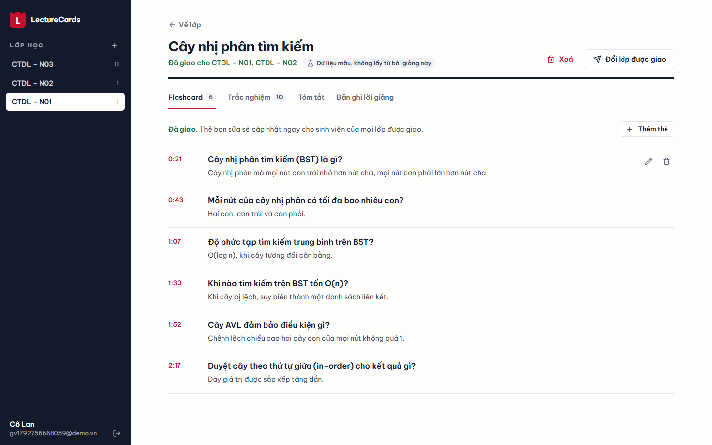
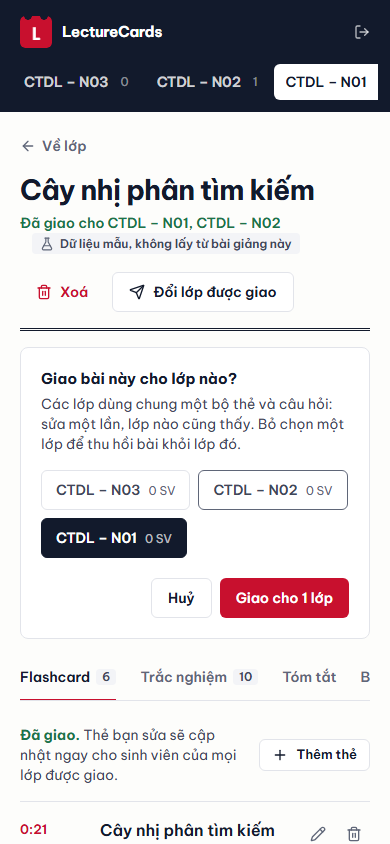

Biến bài giảng tiếng Việt (video, audio, YouTube, PDF/slide) thành tóm tắt, flashcard và câu hỏi trắc nghiệm; sinh viên ôn theo lịch lặp lại ngắt quãng SM-2, mỗi thẻ gắn đúng giây trong bài giảng.
Sinh viên thường xem lại bài giảng ghi hình nhưng ít khi ôn có hệ thống: video dài, khó tìm lại đoạn quan trọng, còn tự soạn thẻ ôn tập thì tốn thời gian. Giảng viên muốn giao tài liệu ôn tập cho lớp nhưng không có thời gian soạn câu hỏi cho từng buổi.
Mục tiêu: giảng viên chỉ cần tải lên một bài giảng (hoặc dán link YouTube, PDF, slide). Hệ thống tự chuyển lời nói thành văn bản, tóm tắt, sinh flashcard và câu trắc nghiệm, mỗi thẻ ghi rõ nằm ở phút/trang nào. Giảng viên duyệt và sửa trước khi giao cho lớp. Sinh viên ôn trên điện thoại theo thuật toán SM-2: thẻ nhớ tốt thì giãn lịch, thẻ hay quên thì gặp lại sớm.
| Người dùng | Việc chính |
|---|---|
| Giảng viên | Tạo lớp (có mã lớp), tải bài giảng, theo dõi tiến trình xử lý, sửa/xoá/thêm thẻ và câu hỏi, chọn số câu – độ khó – kiểu câu (lý thuyết, tính toán, đúng/sai), giao một bài cho nhiều lớp, xem thống kê câu lớp hay sai. |
| Sinh viên | Vào lớp bằng mã, đọc tóm tắt, lật thẻ (bấm vào mốc thời gian để mở đúng đoạn video), ôn theo lịch SM-2, làm trắc nghiệm, xuất thẻ sang Anki (.apkg, CSV). |
Phạm vi: giao diện tiếng Việt, ưu tiên điện thoại (sinh viên chủ yếu dùng điện thoại), đạt mức WCAG AA cơ bản, tự host được bằng Docker.
Repo là một monorepo chia theo người phụ trách: ai/speech, ai/llm, ai/service, backend, frontend, deploy. Hệ thống gồm hai service: backend Node.js + Express lo REST API, xác thực và cơ sở dữ liệu; service AI bằng FastAPI (nội bộ, không ra Internet) lo nhận dạng giọng nói và LLM. Các phần nói chuyện với nhau qua hợp đồng OpenAPI viết trước (docs/openapi.json), nên frontend và backend làm song song được.
docker compose). Chỉ Caddy mở cổng ra Internet; chỉ api chạm vào database.API Express lưu file (hoặc link), tạo bản ghi Lecture, gọi POST ai:/jobs để service AI đẩy job vào Redis, rồi trả về ngay. Worker chạy job nền vì nhận dạng giọng nói có thể mất vài phút; mỗi bước nó báo tiến độ về API qua /internal/lectures/{id}/status, xong thì gửi toàn bộ kết quả qua /internal/lectures/{id}/result (có token nội bộ, Caddy chặn từ ngoài). API lưu kết quả trong một transaction. Frontend hỏi tiến độ mỗi 2 giây (GET /lectures/{id}).
| Phần | Chọn | Lý do |
|---|---|---|
| Backend | Node.js + Express 5 (TypeScript) | REST API, JWT, PostgreSQL; kiểm tra dữ liệu vào bằng zod; SQL thuần có tham số (không ORM) cho dễ đọc và dễ tối ưu truy vấn thống kê. Node chạy thẳng file .ts, không cần bước build. |
| Phần AI | FastAPI + RQ + Redis | Thư viện speech/LLM tốt nhất ở Python (yt-dlp, Whisper, genanki); tách thành service riêng để backend không phụ thuộc Python. RQ ít cấu hình hơn Celery; job timeout 3 giờ cho bài giảng dài. |
| Lời giảng | Phụ đề YouTube trước, Whisper sau | Video có phụ đề (vi rồi en) thì dùng luôn: chính xác, có timestamp, không tốn API. Không có thì tải audio, nén Opus 16 kbps (~7 MB/giờ) và gửi Whisper large-v3 trên Groq; có sẵn tuỳ chọn chạy PhoWhisper/Whisper trên GPU riêng. |
| LLM | Client OpenAI-compatible tự viết, không LangChain | Đổi nhà cung cấp chỉ bằng biến môi trường (Groq, OpenAI, Gemini, Ollama tự host). Tự động chuyển model dự phòng khi hết hạn mức ngày. |
| Lưu trữ | PostgreSQL + volume Docker | Đủ cho quy mô một trường, tự host được. Test và chạy dev không Docker dùng PGlite (chính Postgres, chạy trong tiến trình Node) nên cùng một SQL ở mọi nơi. |
| Frontend | Next.js 15 App Router, Tailwind v4 | Giao diện “lịch blốc” (giấy trắng, mực xanh đen, đỏ lịch) tối ưu cho điện thoại; tôn trọng prefers-reduced-motion. |
| Deploy | Docker Compose + Caddy | Một lệnh dựng cả hệ thống; Caddy tự cấp và gia hạn HTTPS; web và API chung tên miền nên không phát sinh CORS. |
captions.py): ưu tiên phụ đề tiếng Việt do người làm, rồi tự động, rồi tiếng Anh; gộp thành đoạn ~20 giây. Lỗi 429 ở một track thì thử track tiếp theo.yt-dlp + ffmpeg chuyển về 16 kHz mono; engine api gọi /audio/transcriptions (verbose_json để lấy timestamp từng đoạn).wer.py): tỉ lệ lỗi từ bằng khoảng cách Levenshtein trên từ, dùng để so sánh các engine.max_tokens, reasoning_effort=low, chờ theo retry-after khi quá hạn mức phút, chuyển gpt-oss-120b → gpt-oss-20b khi hết hạn mức ngày, và báo lỗi tiếng Việt rõ ràng khi mọi model đều hết. Tạo trắc nghiệm thất bại không làm hỏng bài giảng: tóm tắt và flashcard vẫn được giữ.Viết hợp đồng trước: docs/openapi.json có từ tuần đầu nên frontend và backend làm song song được. Một test của backend gọi thử mọi endpoint trong file này và báo lỗi nếu thiếu route. Xác thực bằng JWT (HS256, hạn 7 ngày; mật khẩu băm PBKDF2-SHA256 200.000 vòng, so sánh thời gian hằng). Mọi body được kiểm tra bằng zod; lỗi trả về {detail} tiếng Việt để hiện thẳng lên giao diện. Sinh viên chỉ thấy bài đã được giao cho lớp mình; câu trắc nghiệm trả về cho sinh viên không kèm đáp án cho đến khi nộp.
| Endpoint | Chức năng | |
|---|---|---|
| POST | /auth/register · /auth/login | Đăng ký (GV/SV), đăng nhập, nhận JWT. Có thể khoá đăng ký GV trên server công khai. |
| POST | /classes · /classes/join | GV tạo lớp (sinh mã 6 ký tự); SV vào lớp bằng mã. |
| POST | /classes/{id}/lectures | Tải file hoặc link YouTube kèm tuỳ chọn trắc nghiệm (số câu, độ khó, kiểu câu); đẩy job vào hàng đợi. |
| GET | /lectures/{id} | Trạng thái + tiến độ 0–100 (frontend poll). |
| PUT | /lectures/{id}/assignments | Giao một bài cho nhiều lớp (dùng chung bộ thẻ); bỏ lớp nào là thu hồi khỏi lớp đó. |
| GET | /lectures/{id}/summary · /transcript · /media | Tóm tắt (markdown), lời giảng có timestamp, file gốc để phát lại. |
| GET | /lectures/{id}/flashcards · /quiz | Danh sách thẻ, câu hỏi. PUT DELETE /flashcards/{id}, /quiz/{id} để GV sửa, xoá. |
| POST | /lectures/{id}/quiz/generate | Sinh thêm (hoặc thay toàn bộ) câu hỏi theo lựa chọn mới. Hết hạn mức AI trả 429 kèm thông báo. |
| GET | /review/due | Thẻ đến hạn ôn của sinh viên (theo lớp hoặc tất cả). |
| POST | /review · /quiz/{id}/answer | Chấm điểm nhớ 0–5 cho thẻ (SM-2 tính lịch mới); nộp đáp án trắc nghiệm, nhận đáp án đúng + giải thích. |
| GET | /classes/{id}/stats | Câu lớp hay sai nhất, số lượt ôn, độ chính xác và số thẻ đến hạn của từng SV. |
| GET | /lectures/{id}/export.apkg · .csv | Xuất bộ thẻ sang Anki; GUID cố định nên nhập lại sẽ cập nhật thay vì nhân đôi thẻ. |
Tổng cộng 30 endpoint; danh sách đầy đủ trong docs/openapi.json.
Schema viết bằng SQL thuần trong backend/migrations/*.sql; API tự áp các file chưa chạy khi khởi động và ghi vào bảng schema_migrations. Khoá ngoại có ON DELETE CASCADE nên xoá bài giảng sẽ xoá kèm thẻ, câu hỏi, lịch sử ôn.
| Bảng | Cột chính | Ghi chú |
|---|---|---|
| users | email (unique), name, password_hash, role | role = teacher | student |
| classes | name, code (unique), teacher_id | mã lớp để SV tham gia |
| enrollments | (user_id, class_id) khoá chính kép | SV thuộc lớp nào |
| lectures | class_id, title, source_type, source_url, file_path, status, progress, error, mock | class_id là lớp tải lên; mock đánh dấu dữ liệu mẫu để UI không nhận nhầm là nội dung thật |
| assignments | (lecture_id, class_id), assigned_at | một bài giao cho nhiều lớp |
| transcripts · segments | engine, text · idx, start, end, text | engine ghi rõ nguồn: captions:vi, api, document… |
| summaries | lecture_id (unique), content | markdown |
| flashcards | front, back, source_start, edited | source_start = giây (hoặc số trang) |
| quiz_questions | question, options (JSON), answer_index, explanation, difficulty, kind, edited | kind = theory | calculation | true_false |
| review_logs | user_id, flashcard_id, quality, ease, interval, repetitions, due_at | mỗi lần ôn một dòng; dòng mới nhất giữ trạng thái SM-2 |
| quiz_attempts | user_id, question_id, choice, correct | nguồn cho thống kê câu hay sai |
SM-2 (sm2.py): điểm nhớ q ∈ [0, 5]. Nếu q < 3, thẻ quay về khoảng 1 ngày. Ngược lại khoảng ôn tăng 1 → 6 → round(khoảng trước × EF) ngày, với EF ← EF + 0,1 − (5−q)(0,08 + (5−q)·0,02), tối thiểu 1,3. Lưu toàn bộ lịch sử thay vì chỉ trạng thái cuối, nên thống kê và đổi thuật toán sau này không mất dữ liệu.


Sinh viên lật thẻ bằng cách chạm; sau khi tự chấm, “tờ lịch” xé đi để lộ thẻ tiếp theo. Mọi chuyển động có phiên bản nhẹ khi người dùng bật giảm chuyển động. Tiến trình xử lý hiển thị theo từng bước của pipeline thay vì một vòng quay vô nghĩa.
| Nhóm | Nội dung kiểm tra |
|---|---|
| AI – pytest (19 test) | WER; làm sạch từ đệm không cắt nhầm từ thật; validate đáp án trắc nghiệm; chuẩn hoá câu đúng/sai mà vẫn giữ đáp án; lọc trùng; lập kế hoạch và lấp chỗ thiếu câu hỏi; xáo phương án vẫn giữ đáp án đúng; chuyển model dự phòng khi hết hạn mức ngày; hỏi lại khi JSON hỏng; bước kiểm tra chỉ loại câu bị giải ra đáp án khác hoặc sai đề; engine Whisper qua API (giả lập HTTP). Service: pipeline báo đúng thứ tự tiến độ rồi gửi kết quả; slide PPTX trích đúng chữ theo trang; lỗi được báo về API; endpoint /quiz tôn trọng tuỳ chọn; file .apkg hợp lệ; bắt buộc token nội bộ. |
| Backend – Vitest + Supertest (10 test) | SM-2; luồng đầy đủ GV tạo lớp → SV vào lớp → tải bài → worker báo kết quả → bài chưa giao bị ẩn → sửa thẻ → giao → SV ôn và làm trắc nghiệm → thống kê → xuất CSV/.apkg; tải file và kiểm tra nguồn; tuỳ chọn trắc nghiệm đến được worker; sinh thêm/thay câu hỏi; giao một bài cho 2 lớp, không cho giao vào lớp của GV khác, thu hồi; đăng nhập, khoá đăng ký GV, đọc được mật khẩu băm từ backend cũ; endpoint nội bộ cần token; dịch vụ AI sập thì bài báo lỗi rõ; từ chối JWT_SECRET yếu; mọi endpoint trong hợp đồng OpenAPI đều có route. Test chạy migration thật trên PGlite (Postgres trong tiến trình), service AI được thay bằng bản giả. |
| CI | backend: tsc --noEmit, Vitest; AI: ruff (lint + format), pytest; frontend: ESLint, tsc --noEmit, next build. |
https://localhost, Caddy tự ký, đủ 7 dịch vụ): chỉ cổng 80/443 mở ra ngoài; HTTP chuyển sang HTTPS (308); có header HSTS, nosniff; /api/internal/* bị chặn từ ngoài (404); API từ chối khởi động với JWT_SECRET yếu. Hai lần tải cùng một đoạn audio 40 giây qua /api: Express → FastAPI → Redis → worker → Whisper (Groq) nhận dạng đúng nội dung tiếng Việt → Groq sinh 6 thẻ và đủ 3 câu hỏi, sẵn sàng sau 8–10 giây; file gốc phát lại được và hỗ trợ tua (HTTP 206). Script sao lưu tạo được bản dump database và file nén thư mục upload./api/internal của Caddy đặt sai thứ tự.| Hạn chế | Hướng xử lý |
|---|---|
| Chưa đo WER trên một bộ dữ liệu bài giảng có nhãn chuẩn; mới có công cụ đo. | Ghi âm/gán nhãn 10–20 phút bài giảng thật, so sánh phụ đề YouTube, Whisper large-v3 và PhoWhisper. |
| Câu trắc nghiệm được kiểm tra bằng chính một LLM và bước giải lại không đọc bài giảng, nên chủ yếu bắt được lỗi tính toán; câu về chi tiết bài vẫn có thể sai hoặc mơ hồ. | Giảng viên luôn duyệt trước khi giao; thu thập tỉ lệ câu bị sửa/xoá làm chỉ số chất lượng. |
| Gói miễn phí Groq chỉ đủ khoảng 5–6 bài giảng/ngày/model. | Nâng gói trả phí hoặc trỏ sang LLM tự host (Ollama/vLLM) chỉ bằng biến môi trường. |
| YouTube có thể chặn IP của VPS, khiến bài dán link bị lỗi. | Tải file trực tiếp; hoặc cấu hình cookie/proxy cho yt-dlp. |
| Âm thanh tối đa ~3 giờ/bài (25 MB sau nén) với Whisper qua API. | Cắt audio thành nhiều đoạn rồi ghép timestamp. |
| Chưa có quên mật khẩu, xác thực email, giới hạn số lần đăng nhập. | Thêm khi mở cho nhiều trường; hiện có khoá đăng ký giảng viên. |
| Frontend chưa có test end-to-end tự động; mới kiểm bằng ảnh chụp Playwright. | Viết Playwright test cho 3 luồng chính và chạy trong CI. |
| Một VPS, không dự phòng; backup nằm cùng máy. | Đẩy backup ra object storage; tách database sang dịch vụ có sẵn sao lưu. |
| Thành viên | Nhiệm vụ và sản phẩm | Đóng góp |
|---|---|---|
| Nguyễn Thái Sơn Speech | Whisper/PhoWhisper, tải audio từ YouTube (yt-dlp), đo độ chính xác nhận dạng (WER). Sản phẩm: ai/speech/ (transcribe, captions, wer), engine Whisper qua API, nén Opus, ai/service/ (FastAPI nội bộ, pipeline). | {{c:Nguyễn Thái Sơn}}% |
| Lương Hoàng Phúc LLM | Chunking, prompt tóm tắt, sinh flashcard, kiểm tra JSON đầu ra, đánh giá chất lượng. Sản phẩm: ai/llm/ (clean, generate, schemas), sinh trắc nghiệm theo kế hoạch + bước giải lại, xử lý hạn mức. | {{c:Lương Hoàng Phúc}}% |
| Nguyễn Công Phước Backend | Node.js + Express, hàng đợi xử lý nền (RQ, vì chạy speech-to-text mất vài phút), database lưu bài giảng và thẻ, thuật toán spaced repetition (SM-2). Sản phẩm: backend/ (REST API, JWT, migration SQL, thống kê, xuất CSV), hợp đồng OpenAPI, giao bài nhiều lớp, endpoint nhận kết quả từ worker. | {{c:Nguyễn Công Phước}}% |
| Nguyễn Hữu Lan Frontend + Deploy | Upload file, thanh tiến trình, trang tóm tắt, giao diện lật thẻ, deploy. Sản phẩm: frontend/, Docker, Caddy, CI, sao lưu. | {{c:Nguyễn Hữu Lan}}% |
| Tổng | {{c_total}}% | |
Các thành viên đã đọc báo cáo và đồng ý với bảng phân công, tỉ lệ đóng góp ở trên.
| Nguyễn Thái Sơn | Lương Hoàng Phúc | Nguyễn Công Phước | Nguyễn Hữu Lan |
|---|---|---|---|